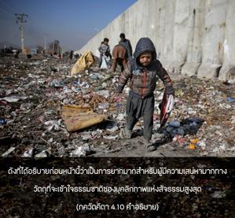
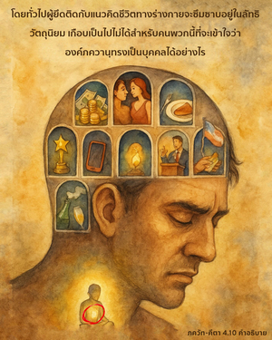
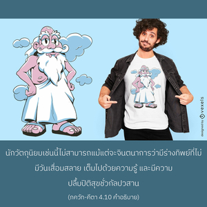

มีอิสรเสรีจากการยึดติด ความกลัว และความโกรธ ซึมซาบอย่างเต็มเปี่ยมในข้า และยึดข้าเป็นที่พึ่ง บุคคลมากมายในอดีตได้รับความบริสุทธิ์ด้วยความรู้แห่งข้า และบรรลุถึงความรักทิพย์ต่อข้า



ดังที่ได้อธิบายก่อนหน้านี้ว่า เป็นการยากมากสำหรับผู้มีความเสน่หามากทางวัตถุที่จะเข้าใจธรรมชาติของบุคลิกภาพแห่งสัจธรรมสูงสุด โดยทั่วไปผู้ยึดติดกับแนวคิดชีวิตทางร่างกายจะซึมซาบอยู่ในลัทธิวัตถุนิยม เกือบเป็นไปไม่ได้สำหรับคนพวกนี้ที่จะเข้าใจว่าองค์ภควานฺทรงเป็นบุคคลได้อย่างไร นักวัตถุนิยมเช่นนี้ไม่สามารถแม้แต่จะจินตนาการว่ามีร่างทิพย์ที่ไม่มีวันเสื่อมสลาย เต็มไปด้วยความรู้ และมีความปลื้มปิติสุขชั่วกัลปวสาน ในแนวคิดทางวัตถุร่างกายเสื่อมสลายเต็มไปด้วยอวิชชาและความทุกข์ ฉะนั้นผู้คนโดยทั่วไปจะรักษาแนวคิดเช่นเดียวกับร่างกายนี้อยู่ภายในใจ เมื่อได้รับข้อมูลเกี่ยวกับรูปลักษณ์ส่วนพระองค์ขององค์ภควานฺ สำหรับนักวัตถุนิยมประเภทนี้ปรากฏการณ์ทางวัตถุที่ยิ่งใหญ่มโหฬารคือสิ่งสูงสุด ดังนั้นจึงพิจารณาว่าองค์ภควานฺไร้รูปลักษณ์ และเนื่องจากซึมซาบอยู่ในวัตถุมากแนวคิดว่าจะมีบุคลิกภาพหลังหลุดพ้นจากโลกวัตถุแล้วทำให้เกิดความกลัว เมื่อได้รับข้อมูลว่าชีวิตทิพย์ยังเป็นปัจเจกบุคคลและมีบุคลิกภาพเช่นเดียวกันจึงรู้สึกกลัวที่จะมาเป็นบุคคลอีกครั้งหนึ่ง ดังนั้นโดยธรรมชาติพวกเขาชอบกลืนหายเข้าไปในความว่างเปล่าที่ไร้รูปลักษณ์มากกว่า โดยเปรียบเทียบสิ่งมีชีวิตเหมือนกับฟองน้ำในมหาสมุทรที่กลืนหายเข้าไปในมหาสมุทร นี่คือความสมบูรณ์สูงสุดแห่งชีวิตทิพย์ที่บรรลุโดยไร้ปัจเจกบุคลิกภาพ เช่นนี้เป็นระดับชีวิตที่น่ากลัวแบบหนึ่งซึ่งขาดความรู้อย่างสมบูรณ์แห่งชีวิตทิพย์ นอกจากนั้นยังมีหลายคนที่ไม่สามารถเข้าใจชีวิตทิพย์ได้เลย พวกนี้รู้สึกอึดอัดจากหลายทฤษฎีและข้อขัดแย้งต่างๆนานาในการคาดคะเนทางปรัชญา ในที่สุดก็รู้สึกเบื่อหน่าย โมโห และสรุปอย่างโง่ๆว่าไม่มีแหล่งกำเนิดสูงสุด ทุกสิ่งทุกอย่างว่างเปล่า บุคคลเช่นนี้อยู่ในสภาวะชีวิตที่ป่วยเป็นโรค บางคนยึดติดทางวัตถุมากดังนั้นจึงไม่ได้ให้ความสนใจกับชีวิตทิพย์ บางคนต้องการกลืนหายเข้าไปในแหล่งกำเนิดทิพย์สูงสุด และบางคนไม่เชื่อในทุกสิ่งทุกอย่าง ด้วยความหมดหวังจึงโมโหต่อการคาดคะเนในวิถีทิพย์ทั้งหมด คนกลุ่มสุดท้ายจะไปพึ่งยาเสพติดบางชนิด และบางครั้งเกิดภาพหลอนแต่กลับคิดว่าเป็นจักษุทิพย์ เราต้องขจัดการยึดติดในโลกวัตถุทั้งสามระดับคือ ละเลยต่อชีวิตทิพย์กลัวต่อปัจเจกบุคลิกภาพทิพย์ และแนวคิดในความว่างเปล่าที่เกิดขึ้นจากความผิดหวังในชีวิต การที่จะได้รับอิสรภาพจากสามระดับของแนวคิดชีวิตทางวัตถุ เราต้องยึดองค์ภควานฺเป็นที่พึ่งโดยสมบูรณ์ด้วยการนำทางของพระอาจารย์ทิพย์ผู้เชื่อถือได้ และปฏิบัติตามระเบียบวินัยและหลักธรรมแห่งชีวิตอุทิศตนเสียสละ ระดับสุดท้ายของชีวิตอุทิศตนเสียสละเรียกว่า ภาว หรือความรักทิพย์ต่อองค์ภควานฺ
ภกฺติ-รสามฺฤต-สินฺธุ (1.4.15-16) ศาสตร์แห่งกาอุทิศตนเสียสละรับใช้กล่าวว่า
อาเทา ศฺรทฺธา ตตห์ สาธุ-
สงฺโค ’ถ ภชน-กฺริยา
ตโต ’นรฺถ-นิวฺฤตฺติห์ สฺยาตฺ
ตโต นิษฺฐา รุจิสฺ ตตห์
อถาสกฺติสฺ ตโต ภาวสฺ
ตตห์ เปฺรมาภฺยุทญฺจติ
สาธกานามฺ อยํ เปฺรมฺณห์
ปฺราทุรฺภาเว ภเวตฺ กฺรมห์
“ในตอนต้นเราต้องมีความปรารถนาพื้นฐานเพื่อความรู้แจ้งแห่งตนจึงจะนำเราไปถึงจุดที่จะพยายามคบหาสมาคมกับบุคคลผู้มีความเจริญในวิถีทิพย์ ระดับต่อไปเราจะต้องอุปสมบทโดยพระอาจารย์ทิพย์ผู้เจริญแล้ว และภายใต้คำสั่งสอนของท่านสาวกนวกะจึงเริ่มปฏิบัติตามขบวนการอุทิศตนเสียสละรับใช้ ด้วยการปฏิบัติการอุทิศตนเสียสละรับใช้ภายใต้คำแนะนำของพระอาจารย์ทิพย์ทำให้เราเป็นอิสระจากการยึดติดทางวัตถุทั้งมวล บรรลุถึงความมั่นคงในการรู้แจ้งแห่งตน และได้รับรสแห่งการสดับฟังเกี่ยวกับองค์ภควานฺผู้สมบูรณ์ ศฺรี กฺฤษฺณ รสชาตินี้จะนำเราก้าวต่อไปถึงความยึดมั่นในกฺฤษฺณจิตสำนึกซึ่งจะเจริญงอกงามจนถึง ภาว หรือระดับพื้นฐานของความรักทิพย์แห่งองค์ภควานฺ ความรักที่แท้จริงต่อองค์ภควานฺ เรียกว่า เปฺรม ซึ่งเป็นระดับสมบูรณ์สูงสุดแห่งชีวิต” ในระดับ เปฺรม จะมีการปฏิบัติรับใช้ด้วยความรักทิพย์ต่อองค์ภควานฺเสมอ ดังนั้นด้วยขบวนการแห่งการอุทิศตนเสียสละรับใช้อย่างค่อยเป็นค่อยไป ภายใต้คำแนะนำของพระอาจารย์ทิพย์ที่เชื่อถือได้จะทำให้เราสามารถบรรลุถึงระดับสูงสุด ซึ่งมีอิสระจากการยึดติดทางวัตถุทั้งปวง และเสรีภาพจากความกลัวปัจเจกบุคลิกภาพทิพย์ของตนเอง รวมทั้งเสรีภาพจากความผิดหวังอันสืบเนื่องมาจากปรัชญาที่สูญเปล่า ในที่สุดเราจะสามารถบรรลุถึงอาณาจักรแห่งองค์ภควานฺ